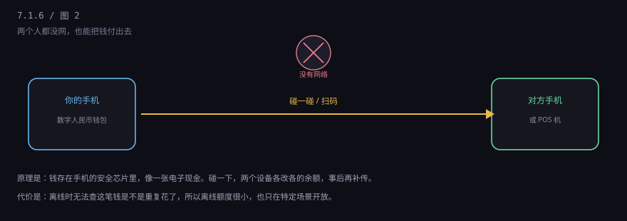
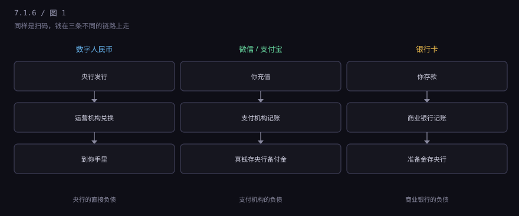
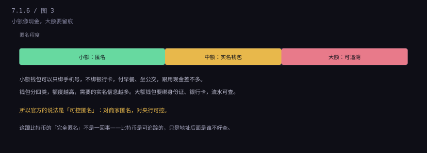
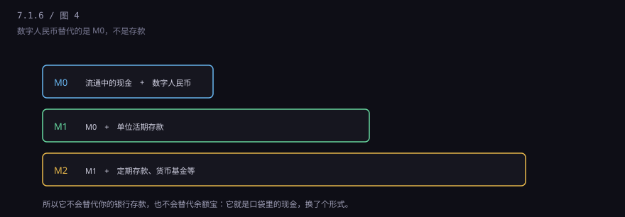

约 0.3 万字 · 4 张图 · 它不是"又一个支付工具"， 是现金换了件电子外衣
地下车库，信号一格都没有。你掏出手机想付停车费， 微信转了半天圈，付不出去。旁边贴着张纸："支持数字人民币双离线支付"。 你打开数字人民币 App，跟收费机碰了一下，"叮"，付成功了。

这个场景是理解数字人民币的入口。微信和支付宝做不到， 因为它们的每一笔支付都要连到服务器去改账； 数字人民币能做到，因为钱就存在你手机的安全芯片里， 像个电子钱包，碰一下就把钱递过去了。
当然，离线也有代价：对方没法立刻确认这笔钱是不是重复花了。 所以离线额度很小（早期试点单笔几百元），也不是所有场景都开放。 这跟现金一样——现金也可能收到假钞，只是概率问题。
官方定义是：数字人民币是中国人民银行发行的数字形式的法定货币， 定位于M0，也就是流通中的现金。
这句话里有三个关键词，每个都很重要。
"央行发行"：它和纸币一样，是央行的直接负债。 你手里有一百块数字人民币，就是央行欠你一百块。中间没有银行、没有支付机构。
"法定货币"：意味着法偿性——在中国境内， 任何单位和个人不能拒收。商家可以拒绝你刷微信，但不能拒绝你付数字人民币。 这是它和支付宝余额最硬的区别。
"M0"：它替代的是你口袋里的现金，不是你的银行存款。 这一点后面单独讲，因为它决定了它的规模上限。
表面上看，三者都是"打开 App、扫码、输金额、付成功"。 底层差得很远。

第一，钱从哪来。 微信支付是从你绑的银行卡里扣，本质是"银行存款搬家"； 数字人民币是从你的钱包余额里扣，本质是"现金换手"。你不需要绑银行卡也能用。
第二，谁欠你。 微信余额是支付机构欠你（真钱在央行备付金）；数字人民币是央行直接欠你。 前者靠备付金制度保障，后者靠国家信用。
第三，能不能拒收。 商户可以贴"本店不支持微信"，但不能拒收数字人民币。
第四，手续费。 微信、支付宝对商户收 0.6% 左右的费率（部分行业有优惠）； 数字人民币兑换和流通不收手续费，这是它设计时的明确原则。
第五，限额。 微信零钱有年累计 20 万的限额（一类钱包），数字人民币钱包按实名等级分四类， 额度规则不同，但不受支付账户那套限制。
你可能会想：既然是央行发行的，为什么还要通过银行 App 兑换？ 央行直接给每个人开户不行吗？
技术上可以，但设计上不这么干。数字人民币采用双层运营： 央行把币发给运营机构（主要是商业银行，也有支付机构）， 运营机构再兑换给你。
原因有三个。一是不颠覆现有银行体系：如果人人都在央行开户， 存款会大量搬到央行，商业银行就没钱放贷了，整个信贷体系会失血。 二是利用现有网点和风控：银行有客户、有系统、有反洗钱能力，重新建一套是浪费。 三是分散压力：十几亿人的交易量，央行一家扛不住。
所以你在 App 里看到的"兑换"，实际是：你的银行存款减少，你的数字人民币钱包增加， 运营机构在央行的准备金相应调整。中间的账，仍然是那套两级体系。
这是最容易被误解的一点。官方的说法是"可控匿名"， 六个字要拆开看。

"匿名"是对商家说的。 你用数字人民币买杯咖啡，商家拿不到你的手机号、拿不到你的消费画像， 这一点比扫码支付更接近现金。微信支付每一笔都绑定你的账号，商家和平台都知道你买了什么。
"可控"是对监管说的。 大额钱包要实名，交易可追溯；涉及洗钱、诈骗、逃税，司法机关依法可以查。 这不是"监控每一笔买菜钱"，是"大额留痕"。
对比一下就清楚了：现金是完全匿名（不可控），支付宝是实名（不可匿名）， 数字人民币想取中间——小额匿名、大额可控。
很多人的疑问是：微信支付宝已经这么方便了，为什么还要搞一个？
第一是普惠。 中国还有一部分人没有银行账户，或者不方便用智能手机。 数字人民币钱包可以只绑手机号，甚至有实体卡片形式（硬钱包）， 老人、小孩、境外来客都能用。
第二是成本。 商户收款要付手续费，这笔钱最终会进商品价格。数字人民币不收，对小商户是实打实的减负。
第三是货币主权。 如果有一天大家都用 USDT、用某种稳定币做日常支付， 国家的货币政策的传导就会失灵。央行自己发一个，是最直接的应对。
第四是跨境。 国际上有个多边项目叫"多边央行数字货币桥"（mBridge）， 几个国家/地区的央行一起试验用数字货币做跨境结算，绕过传统的代理行链条。 这条线还在早期，但方向是清楚的。
第五是数据。 支付数据现在集中在两家公司手里。数字人民币让国家有一条自己的通道， 这对监管、对货币政策制定都有价值。
这一条能挡掉很多谣言。数字人民币是 M0，所以：

还有一个常见谣言："数字人民币会取消现金"。不会。央行多次明确， 数字人民币和纸钞长期共存，喜欢用现金的人继续用。
2014 年央行开始研究，2019 年底在深圳、苏州等地试点， 2020 年起在多个城市铺开，覆盖的场景从公交地铁、餐饮零售， 扩展到工资代发、税费缴纳、消费券发放、跨境支付。
它没有像当年的"扫码支付大战"那样砸钱补贴，所以你感觉不到它。 官方的定位是"零售型 CBDC"，主要服务日常小额支付， 不追求短期铺开速度。目前累计交易笔数和金额都在增长， 但相对微信、支付宝的体量还是很小的份额。
一个观察：很多地方是"发消费券"带动起来的。政府用数字人民币发券， 限定用途、限定时间，能精准拉动消费，也顺便让市民装了 App。
这三样东西经常被混在一起说"数字货币"，其实一个都不挨着一个。
| 问题 | 数字人民币 | USDT | 比特币 |
|---|---|---|---|
| 谁发行 | 中国人民银行 | Tether 公司 | 没有发行方 |
| 背后是什么 | 国家信用 | 美债和现金储备 | 什么都没有 |
| 价格 | 1 元就是 1 元 | 锚定 1 美元 | 市场定价，波动大 |
| 能不能拒收 | 不能 | 可以 | 可以 |
| 境内合法性 | 法定货币 | 相关业务非法 | 相关业务非法 |
一句话：数字人民币是"钱"，USDT 是"公司的欠条"，比特币是"一种资产"。 三者的法律地位差着数量级。
六节讲完，把这条线串一下。
钱不是"东西"，是记账。每一张钞票、每一行余额， 背后都写着"谁欠谁多少"。不同的钱，只是欠钱的人不同、还钱的规矩不同。
美元是这个体系里最通用的一本账，因为所有人都认它； 人民币这本账由国家管着进出，稳但手续多； USDT 是一家公司开的小账本，快但没保障；比特币是一本谁都能记、谁都不负责的账；数字人民币是把现金直接变成电子记账。
那这些账本平时由谁在维护？绝大多数时候，是银行。 下一章讲银行到底在干什么——它不生产钱，它只是记账， 但它的记账方式，能让一笔钱"变"成好几笔。